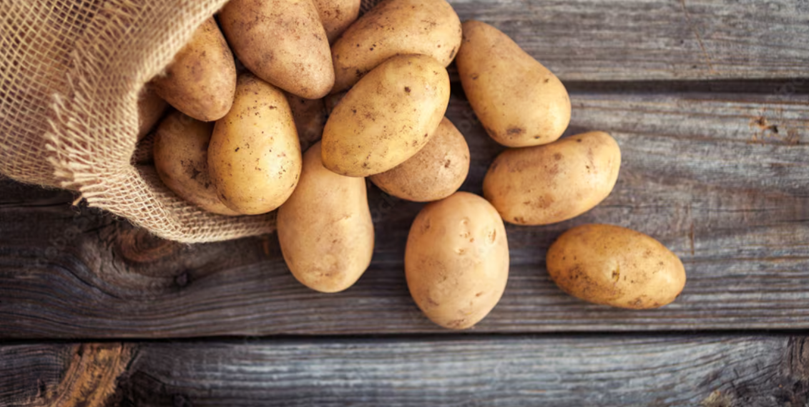
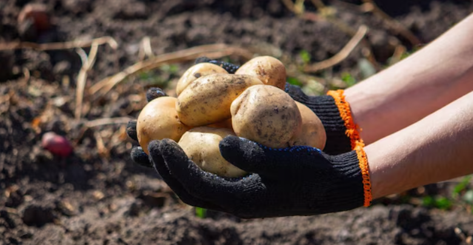
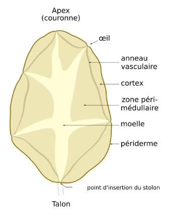

A espécie começou a ser cultivada por civilizações andinas há cerca de oito mil anos e o cultivo foi aperfeiçoado pelos Incas, que utilizavam, inclusive, técnicas de irrigação. Os espanhóis introduziram, no século XVI, a espécie na Europa, e se tornou um alimento fundamental no continente.
A batata (Solanum tuberosum) é uma planta herbácea que pode atingir mais de 100 centímetros de altura e produz um tubérculo - a batata - rico em amido. A batata pertence à família das solanáceas, e partilha o género Solanum com pelo menos outras mil espécies, como o tomate e a beringela.
Esta espécie divide-se em somente duas subespécies levemente diferentes: andigena, que é adaptada às condições de dia curto e é cultivada somente nos Andes, e tuberosum, a batata que é cultivada por todo o mundo, que acredita-se ser descendente da introdução da subespécie andigena na Europa, que se adaptou aos dias mais longos.
Além de ser um alimento versátil, a batata também é rica em vitaminas e minerais, como vitamina C, potássio e vitamina B6. Ela é uma excelente fonte de energia e pode ser incluída em uma dieta equilibrada.
A batata é um alimento muito popular em todo o mundo e é consumida de diversas formas, como frita, cozida, assada ou em purê. Ela é um ingrediente básico em muitas receitas e é amplamente utilizada na culinária de diferentes países.
Apesar da batata cultivada em todo mundo pertencer a somente uma espécie (Solanum tuberosum), existem milhares de variedades com diferentes características de tamanho, cor, textura e sabor. Por meio da seleção e cruzamento de variedades é possível criar novas diversidades de batatas mais resistentes a doenças.
Esse processo envolve cerca de onze anos por meio de uma sofisticada seleção criando novas cultivações com uma qualidade satisfatória para a sua comercialização. As variedades atuais são mais resistentes graças a esse processo que permite produzir tubérculos com maior qualidade e variedade de tamanho e sabor.